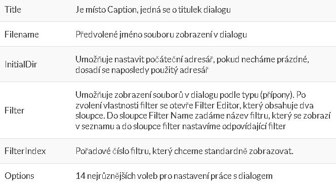
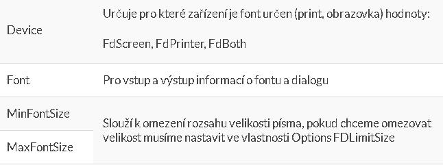

Standardní dialogové boxy
Předdefinované standardizované dialogové boxy WINDOWS najdeme na
paletě komponent v záložce DIALOGS. V době návrhu aplikace se na
formuláři objevují jako malé zástupné ikony, které nejsou za běhu
programu vidět dokud nezavoláme jejich nejdůležitější vlastnost EXECUTE.
Poté se zobrazí příslušný dialogový box, chod programu je pozastaven a
existují 2 způsoby ukončení dialogu – OK, Cancel
Open, Save Dialog – Vlastnosti

FontDialog – nastavení písma pro text. Editory – Vlastnosti

ColorDialog – nastavení barev
Umožňuje uživateli zvolit barvy pro různé části prostředí.
Vlastnosti
Color – se používá pro aktuální barvu na vstupu a vybranou barvu na výstupu
Panel nástrojů
Panel nástrojů vytvoříme tak, že na formulář umístíme komponentu
Panel ze záložky Standard, nastavíme její vhodnou velikost (standardní
výška tlačítek je 25 bodů). Na panel pak umístíme jednotlivé tlačítka
SpeedButton ze záložky Additional. Mezi připadnými skupinami necháme
mezery.
SpeedButton
Komponenta SpeedButton je velmi podobná komponentě BitBTN. Opět
zobrazuje obrázek (glyph) ale na rozdíl od BitBTN nezobrazuje text.
SpeedButton není ovladatelný klávesnicí a nelze se na něj dostat pomocí
klávesy TAB. Je výhradně pro ovládání myší. Panel nástrojů lze vytvořit
tak, že vždy musí být stlačeno právě jedno tlačítko ze skupiny.
Stlačením jiného předchozí vyskočí. Nebo může být zamáčknuto 0 až
nekonečně tlačítek.
Komponenta SpeedButton má pro spolupráci tlačítek vlastnost
GroupIndex. Standardně je nastavena na 0 což značí, že se jedná o
nezávislé tlačítko. Chceme-li vytvořit spolupracující skupinu musíme
nastavit vlastnost GroupIndex všech tlačítek ve skupině na stejné
nenulové kladné číslo.
Vlastností Down nastavíme, které tlačítko bude na počátku stlačeno.
Nestavením vlastnosti AllowAllUp na true pro danou skupinu umožníme aby
žádné tlačítko nebylo stlačeno.
Běžným prvkem u panelu nástrojů je přítomnost tzv. plovoucí nápovědy,
což je text stručně popisující tlačítko pod kurzorem. Text nápovědy
k danému tlačítku vyplníme do vlastnosti Hint. Zobrazování nápovědy
zajistíme nastavením vlastnosti ShowHint na true u jednotlivých
SpeedButtonů nebu u komponenty Panel pro všechny tlačítka.
BitBTN – tlačítko s BITMAPOU
Komponenta BitBTN je velice podobná standardnímu tlačítku, pouze má
navíc některé vlastnost: BITMAPU – charakterizuje FCI tlačítka
(vizuálně).
Buton a BITBTN jsou při svém použití zaměnitelné, rozdíl je pouze vizuální.
Vlastnosti
Kind
Umožňuje výběr z předdefinovaných tlačítek, při zadání bkCustom je
možné pro tlačítko dodat libovolný obrázek. Nastavením vlastnosti KIND
se přednastaví i některé další vlastnosti např. caption
Glyph
Určuje přiřazení obrázku ke tlačítku
Layout
Umožňuje změnit uspořádání textu a obrázku na tlačítku (obr vlevo text vpravo apod.)
Margine
Udává odsazení obrázku s textem od okraje tlačítka, při nastavení na -1 je obrázek s textem na tlačítku vycentrovaný
Spacing
Udává velikost mezery mezi obrázkem a textem
K vytvoření bitmapy je možné využít ImageEditor Delphi v menu Tools –
Image Editor, případně jiný rastrový editor. Je také možné využít
kolekce hotových obrázků. Pokud chceme aby velikost symbolů odpovídala
těm na standardních tlačítkách nastavíme velikost Bitmapy na 18×18 bodů.
Bevel – oddělovací čáry a rámečky
Pokud je na formuláři větší počet komponent je vhodné jejich vizuální
rozdělení do skupin. K tomu lze využít komponentu Bevel, která však
není vlastníkem na ní umístěných komponent jak je tomu u panelu nebo
GroupBoxu. Možné jsou základní způsoby použití komponenty Bevel, které
nastavíme pomocí vlastnosti Shape.
Dva typy ráměčků:
bsbox – plošný tvar
bsframe – rámeček
Oddělovací čáry podle stran (bsBottom, bsTopLine, bsLeftLine, bsRightLine)
Style – podle toho jak nastavíme vlastnost bude čára buď opticky vyzvednuta (bsRaised) nebo ponořena (bslowered)
Status Bar – stavový řádek
K vytvoření stavového řádku slouží komponenta Status Bar v záložce
WIN32. Komponenta může být použita téměř jako panel pro zobrazování
nápovědy. Pro tento způsob použití musíme nastavit vlastnost SimplePanel
na true a pak můžeme pro výstup textu použít vlastnost SipmleText.
Výhoda komponenty Status Bar však spočívá v možnosti definice
množství podpanelů (rozčlenění stavového řádku na několik úseků).
Podpanely nadefinujeme StatusBarPanels editoru, který aktivujeme vlastní
Panels. Zde také nadefinujeme atributy každého podpanelu – text, šířka,
styl, 3D efekt, zarovnání textu.
Status Bar nejčastěji využijeme pro zobrazení informací o položce
menu právě vybrané uživatelem a pro stavové informace – např. stav
některých kláves, datum, čas, typ klávesnice apod.
Použití stavového pruhu pro zobrazení nápovědy pro vybranou položku menu:
Text který chceme zobrazovat napíšeme do vlastnosti Hint jednotlivých
položek menu. Potom je možné sepsat kódpro zobrazování nápovědy při
najetí na položku menu.
Do deklarace napíšeme hlavičku procedury: procedure ShowHint (sender: TObject);
Pak dopíšeme samotnou proceduru:
Procedure TForm1.ShowHint(Sender: TObject);
Begin
StatusBar1.panels[0].text:=Application.Hint;
End;
Naprogramujeme událost OnCreate pro formulář:
Application.OnHint:= ShowHint;
Pokud chceme stavový pruh využit k nápovědě pro tlačítka panelu
nástrojů, nastává problém, vlastnost Hint tlačítek je použita text
plovoucí nápovědy. Do vlastnosti Hint je však možné napsat nápovědy obě.
Nejdříve se zadá text plovoucí nápovědy, jako oddělovač se použije
svislá čára (ALT+124) a potom se zadá text pro nápovědu ve stavovém
pruhu
Zobrazení stavu klávesy
Při zobrazení stavu klávesy musíme volat FCI GetKeyState, která vrací
číslo stavu. Jestliže je spodní (poslední) bit čísla 1 tak číslo je
liché, pak je klávesa stisknuta. Stav můžeme při stisku libovolné
klávesy tj. doprogramujeme událost OnKeyDown u Form.
If odd(GetKeyState(VK_CAPITAL))=true then StatusBar1.panels[2].text:= ‘CAPS’ else StatusBar1.panels[2].text:= ‘’;
Názvy kláves
VK_CAPITAL – caps lock
VK_SHIFT – shift
VK_CONTROL – CTRL
VK_F1 – F1
VK_A – A